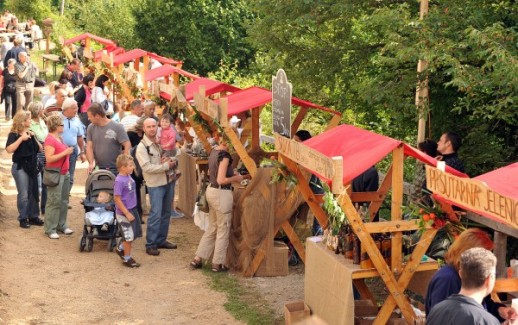

Sajam je jedinstvena prilika da se kupe proizvodi direktno iz ruku ljudi koji ih proizvode i kojih najčešće nema u trgovinama. Bit će predstavljeni stari zanati, neizostavan je tor s domaćim životinjama – boškarinom, tovarom, ovcama i kozama, a tu je i Učionica u prirodi
Učka - Deveto izdanje Učkarskog sajma na rasporedu je prekosutra, u nedjelju 6. rujna, na prijevoju Poklon u Parku prirode Učka. Ova, sada već tradicionalna fešta iz godinu u godinu privlači na tisuće posjetitelja i okuplja veliki broj proizvođača autohtonih proizvoda sa područja Istre i Kvarnera.

Mali proizvođači, OPG-ovi, obrtnici, na gotovo 40 štandova nudit će svoje proizvode – prave gastro delicije – med, rakije, sireve, kolače, marmelade, mesne proizvode, proizvode od ljekovitog bilja, voće i povrće, ulja, žitarice, smokvenjake, namaze, tartufe, gljive... Sajam je jedinstvena prilika da se kupe proizvodi direktno iz ruku ljudi koji ih proizvode i kojih najčešće nema u trgovinama široke potrošnje, ističu organizatori iz Javne ustanove PP Učka.
Povrh prodajnih štandova, na izložbenom dijelu moći će se razgledati etno zbirka Lovranšćine, lončarenje na kolu, izrada drvenih bačvi, obrada kamena, autohtoni glazbeni instrumenti i njihova izrada, izložba gljiva, a kao posebni gosti dolaze nam žene iz Like koje ća nam pokazati tajne predenja i pletenja vune – baš onako kako su nekada nonice činile na obroncima Učke i šire.
Naravno, neizostavan je i tor s domaćim životinjama. Istarsko govedo – boškarin, istarska ovca – pramenka, domaća krava, istarski tovar i naravno koza i ove će godine biti dio sajma i jedne od njegovih glavnih zvijezda.
U obližnjoj Učionici u prirodi, program započinje već u 11 sati kada će održati predstava za djecu pod nazivom "Pra priče", a zatim u 13 sati započinju edukativna predavanja. U 13 sati na redu je predavanje Viviane Brkarić (udruga "Spod Učke") i Adrijane Gabriš (udruga "Žejane") koje će predstaviti dva ugrožena jezika, vlaški i žejanski, a koji predstavljaju iznimno bogatstvo nematerijalne kulturne baštine ovog kraja. U 14 sati predstavnici LAG-ova Terra Liburna, Središnja i Istočna Istra predstavit će svoje aktivnosti i planove te kako se uključiti u buduće projekte.
U 15 sati Nataša Babić, kustosica Muzeja turizma iz Opatije, održat će prezentaciju o ideji bečkog lječnika Albina Edera o povezivanja opatijske rivijere i Učke električnom željeznicom.
Cijeli sajam pratit će i bogati kulturno-zabavni program koji započinje u 13.30, a u kojemu će nastupiti klapa "Volosko" i klapa "Skalin", sastav "Feralić", KUD "Mate Balota", a učenici PŠ Mošćenička Draga izvest će svoju lutkarsku predstavu "More i mornari". Za završnicu programa, od 17.30 sati nastupaju Mauro Staraj i La Banda.
Marina Kirigin
September 4, 2015
© 2015 Novi List